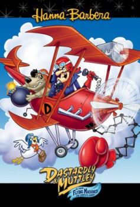

Dastardly and Muttley in Their Flying Machines - Season 01 (1969)


Also known as:Dick Vigarista & Muttley: Máquinas Voadoras (Português (Português (Portuguese (Brazil) title)
Country:United States, 291 minutes
Spoken languages:English
Genres:Animation, Comedy, Family
Director(s):Joseph Barbera, William Hanna
Writer(s):Larz Bourne, Michael Maltese, Dalton Sandifer, Joseph Barbera, William Hanna
Video Codec:Unknown
Number: 213
Tomatometer:

--

--
IMDb Rating:


7.1/10 (3.8K votes)
Certification:
Storyline:
Dick Dastardly lidera um grupo de aviões de caça em uma tentativa fracassada de deter um pombo-correio.
Cast:
Paul Winchell (as Dick Dastardly, 17 episodes, 1969-1970), Don Messick (as Klunk, 17 episodes, 1969-1970)
Medium: Digital Copy,
Location: SM3-1
Loaned: No
Aspect ratio: Unknown